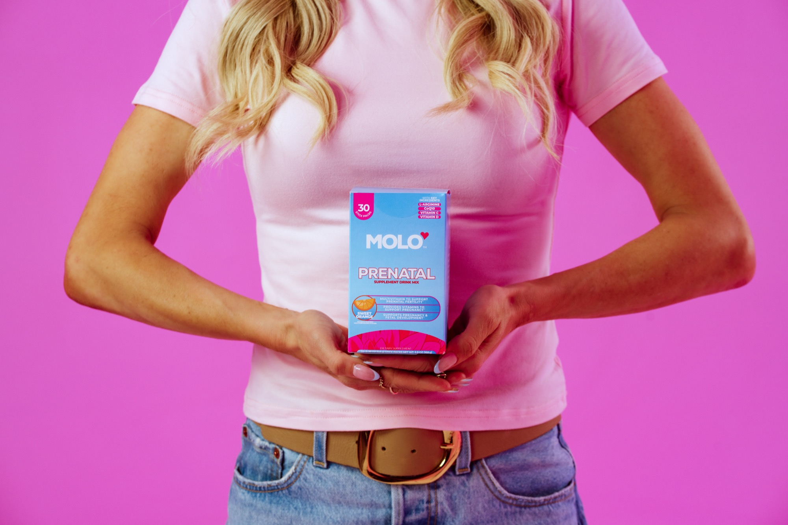

Tastes delicious ★★★★☆
“Actually tasty and not overpowering. I was pleasantly surprised.”
Molo Prenatal
Preconception Foundation
The foundation your body draws on, started before you conceive rather than after. 600 mcg of folate in the active methylfolate form, with vitamin C, vitamin D, CoQ10 and ginger root. One drink a day, stirred into cold water.
Gets your body ready before you conceive600 mcg of folate as L-5-MTHF, the active methylfolate form, not folic acid
Built for the part before the positive1,000 mg vitamin C, 50 mcg vitamin D, CoQ10 and algal DHA
Easy to take on a difficult morningA drink, not a capsule, with 50 mg of ginger root in it. No added sugar, nothing artificial
Nurse-formulatedWritten by the Chief Nursing Officer of a fertility clinic, from the list she gives her own patients
Choose your flavor: Black Cherry
Mixing flavors is available on the 90-day plan.
Autoship & Save
What is in it?
600 mcg folate as L-5-MTHF, 1,000 mg vitamin C, 50 mcg vitamin D3, vitamin E, niacin, B6, B12, biotin, 4.5 mg chelated iron, 3 mg zinc, 2 g L-arginine, 50 mg CoQ10, 50 mg ginger root and 20 mg algal DHA. No proprietary blends.
Is this a complete pregnancy prenatal?
No, and we would rather say so. Molo Prenatal is built as a preconception foundation, for the months before a positive. It does not contain choline, iodine, calcium or magnesium, and its iron is 4.5 mg rather than a pregnancy dose. When you get a positive, bring this label to your OB and ask specifically about your iron and choline targets.
When and how do I take it?
One stick a day, stirred into 8 to 12 oz of cold water. Any time of day works. What matters is that you take it daily for the full ninety days.
Why is there ginger in it?
50 mg of ginger root, which is the one ingredient here with real evidence behind it for nausea. It is in the formula for the mornings when a supplement is the last thing your stomach wants, which is exactly when a routine tends to break.
Where is it made, and is it tested?
Made in the USA in a GMP-certified facility, and third-party tested for purity and potency.
Can I take this during IVF or IUI?
Bring the label to your clinic before starting anything during a treatment cycle. Molo is a supplement rather than a medical product, and your clinic’s protocol always comes first.
When to start
Most women start a prenatal after the positive test. Folate needed to be there before it.
The instinct is that a prenatal is for pregnancy, so you start it when you are pregnant. It is a completely reasonable read and it is the wrong end of the timeline. The nutrient preconception is actually about is folate, and it does its work early, before most women know anything has happened.
Molo Prenatal carries 600 mcg of folate as L-5-MTHF, the active form, alongside 1,000 mg of vitamin C, 2,000 IU of vitamin D, 50 mg of CoQ10, chelated zinc, B6 and B12. It is the one you start now, in the months you are trying, so it is already in place by the time anything else is.
Start it while you are trying, not after
What is in it
Every amount printed. Nothing hidden.
Folate, 600 mcg DFE
As L-5-MTHF, the active form. The nutrient preconception is actually about
Vitamin C, 1,000 mg
Antioxidant support, at a real dose
Vitamin D3, 50 mcg
2,000 IU. Bone, muscle and immune support
CoQ10, 50 mg
Cellular energy
Ginger Root, 50 mg
The one ingredient with real evidence behind it for nausea. It is already in here
Iron, zinc, B6, B12, biotin, E, niacin, DHA
The daily foundation, in chelated and active forms
Something we put in on purpose
There is 50 mg of ginger root in here, and it is not for flavor.
Ginger is the ingredient with the most real evidence behind it for settling a stomach, and Christina put it in the formula deliberately, because she knows what the mornings can look like on this side of a positive test and on this side of a hard cycle.
It is not a reason to buy a prenatal. It is a small sign of who wrote it.
Who it is for
Preconception. Women trying to conceive, or getting ready to
When you get a positive
Bring this label to your OB and ask about your iron and choline targets for pregnancy
How long to take it
Ninety days minimum, and through as much of the trying as you want
The other half
Your prenatal covers the pregnancy. Nothing in it is built for ovulation.
A prenatal is the foundation, and it is the right thing to be taking. But your cycle right now is a different job: ovulation, ovarian health, cycle regularity. Very few prenatals were ever built for any of it, and Molo Prenatal is no exception. That work belongs to Ovulation, which is why Christina wrote both.
Adding Ovulation costs $60 more for ninety days, which is $0.67 a day, and it is the difference between half a routine and the whole one.

What women trying to conceive say
4.6/5 across 68 reviews.
“I was much better hydrated those 30 days, because I looked forward to drinking it.”
“Pre-measured stick packs, so there’s no guessing or swallowing pills.”
“Actually tasty and not overpowering. I was pleasantly surprised.”
“You need at least 2-3 months to notice any difference in a supplement’s effects.”
“It is cheaper to buy something like this, where there are several supplements in a packet mix.”
Our promise
Ninety days is the ask. So ninety days is the guarantee.
90 DAY
Window guarantee
Ninety days is the ask, 120 days is the window to claim it. Opened bag is fine. No return shipping. One email.
FAQs
Can I keep taking this once I am pregnant?
Talk to your OB and bring the label. This one is built for preconception, so for pregnancy specifically, ask about your iron and choline targets.
Why methylfolate instead of folic acid?
Methylfolate is the active form, which is why Christina chose it. Worth knowing: the CDC’s position is that folic acid is the form with the evidence behind it for preventing neural tube defects. If that matters to you, ask your provider which one is right for your situation.
Is this safe if I am on birth control, or just coming off it?
Talk to your provider, and bring the label. Plenty of women start while they are coming off the pill, but your provider knows your situation and we do not.
What does it taste like?
Strawberry Kiwi is bright and light. Black Cherry is deeper and less sweet. Both sweetened with Reb M and monk fruit, no added sugar and nothing artificial.
Can I take just this, without Ovulation?
You can, and some women do. But they cover different things, and taking one means covering half of what you meant to cover.
What is the guarantee?
Ninety days is the ask, 120 days is the window to claim it. Opened bag is fine. No return shipping. One email.
Still deciding? Ask us.
We are a small team and a real person answers. Most questions come back the same day.